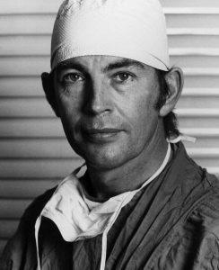

"It is infinitely better to transplant a heart than to bury it.-Dr.Barnard"
8 Novemeber 1922 - 2 september 2001

Christiaan Barnard was a Cardiac surgeon, who performed the world first human heart transplant in 1967. He was successful and this type of surgery has saved and changed many lives till this day. He is a hero because he changed modern medicine to what we know it today.
Biography of Christiaan Barnard:
Barnard was born the 8th Novemeber 1922 a small town named Beaufort West, in the Cape province South Africa.
He studied medicine at the University of Cape Town and University of Minnesota. As a young doctor he developed a remedy for the infant defect of
Interstinal Atresia.
his technique saved the lives of 10 babies in Cape Town. His technique was adopted by surgeons in USA and Uk which saved many more babies.
In 1958 Barnard was appointed head of the Department of Experimental surgery at Groote Schuur Hospital
in 1961 Barnard was appointed Head of the Division of Cardiothoracic Surgery at the teaching hospitals of UCT. He became associate Professor int the Department of Surgery at the UCT in 1962.
The 3rd December 1967 The first human-human heart transplant
took palce, the patient lived for 18 days giving him enought time to say good bye to his family and loved ones but due to the anti-rejection medication which was not suitable for his immune system he passed away.
Christiaan's second attempt was in 1968 and the patient lived for 19 months and was allowed to go home.
In 1972 Barnard became the Professor of Surgical Science in the Department of Surgery at UCT.
In 1984 Barnard became the Founding member of the World Cultural Council.
The 2nd september 2001 Barnard died in Cyprus while on holiday with his family, his death was caused by a severe Asthma attack.
Christiaan Barnard worked his whole life in the medical field, striving towards saving lives and helping others.
He is one of South Africans most famous surgeons, and made a mark on modern medicine.